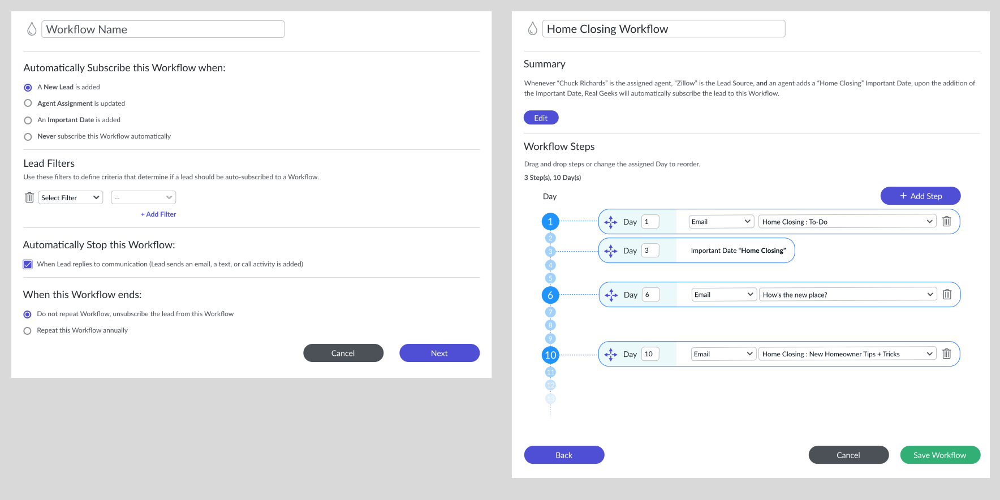
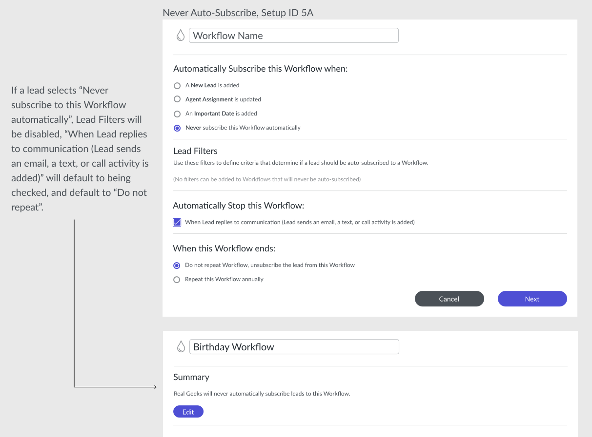
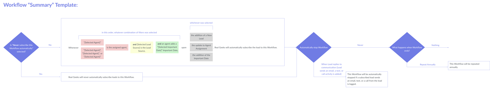
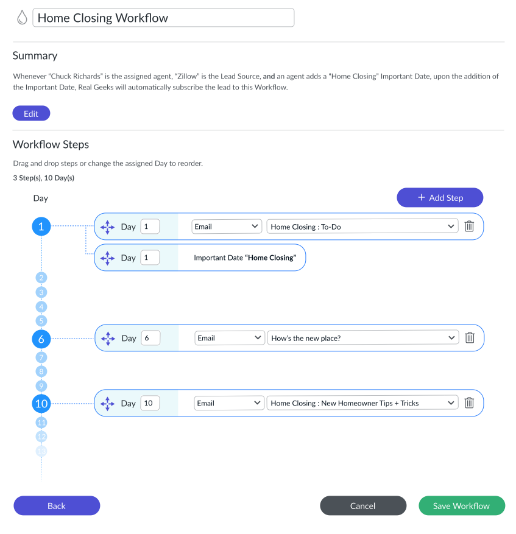

- •
- •
- •
RealGeeks - "Drip" Messaging Workflows
2022 - Automated Lead Outreach Tool


Real Estate Agents utilizing the RealGeeks Leads Manager CRM also have access to “Drip” - an automated lead outreach platform. While Drip did have rich features for creating email/text templates, up until this project began, the campaign template options within Drip were stale and rigid- not accounting for many “real” experiences that agents and their clients would actually come up against.
RG Agents were pleading with us for a way they could automate email and text campaigns triggered by specific events (new lead, home closings, birthdays, etc.). We also saw an opportunity to warm up cold leads with automated messaging campaigns.
I led the research and design efforts as we created a new, flexible, easy-to-use outreach campaign tool. We needed to address the UX/UI in both the Drip system as well as Lead Manager (CRM) in order to create a cohesive and clear experience for agents using these tools. I also created detailed code test guides for the developers to ensure the “plain english” conditional statement generator would work properly- ensuring a crystal-clear explanation would show for each campaign set up in Drip, setting expectations for the agent properly.
Working closely with my product and dev partners, the team set out to build a new tool within the Drip system for lead outreach campaign setup. We knew we needed this tool to be highly customizable - so we planned a wizard-style tool with conditional features, giving agents full control over their outreach campaigns, while maintaining guardrails to prevent “impossible” scenarios. This new tool would also communicate clearly the expected results of the campaign in plain english, and show clear summaries of the decisions agents are making step-by-step.
I created focus groups of real estate agents using the RealGeeks platform.
We created a thorough list of wants and needs for outreach campaign creation, and gathered a better understanding surrounding the pain points of the legacy tools and what could be done better.
Once I understood what would be necessary- I was able to separate out the necessary features into two buckets: “Workflow Rules”, and “Workflow Steps”.
Users would create a set of rules to determine how the campaign gets set off, who it affects, how/when the campaign ends, and whether or not it repeats.
Then, they’d utilize existing email/text templates and select how many hours/days/weeks apart each template would get sent out after the workflow start is triggered.
It was highly likely that more filters/triggers would be beneficial down the road, such as location-based triggers that send out listing info to leads searching in a specific area- so I planned to design for a scalable step-by-step wizard setup that could be expanded to include more customization options in the future.
The first step of the tool allows agents to customize when a workflow would auto-subscribe for a lead, filters to determine if a workflow applies to that lead, whether or not to auto-stop the workflow when a lead engages/replies, and when a workflow ends. Some of these selections are conditional- for example: if a lead selects “Never subscribe to this Workflow automatically”, Lead Filters would need to be disabled, and auto-stop would default to “When Lead replies to communication”, and “Do not repeat” would be auto-selected.

Once the rules and filters are set up, I wanted to design a generatable summary that details the selections made in plain-english so the agent is 100% clear on what will happen when they activate a new workflow.
In order to make sure these summaries were generated to properly reflect the selections users made, I created a Workflow “Summary” Template and wrote code tests addressing the conditional statements for developers.

I designed an easy-to-customize drag-and-drop interface allowing users to create a timeline of when certain email/text templates would go out to leads. This interface allows for workflows to begin before, on, or after an important date. Workflows could be up to 365 days long, and emails/texts could be customized to go out hours, days, or weeks apart per user preferences.

This feature was adopted at record speed, with great enthusiasm! Agents engaged with our in-app feedback survey rating the new features at an average of 95% satisfaction, saying they were already re-engaging cold leads within a month of setting up new outreach campaigns. We saw an uptick in the use of Drip by an average of 65% daily in the first 6 weeks of usage. The requests for additional filters/customization options poured in as users were so excited to set up highly detailed workflows.